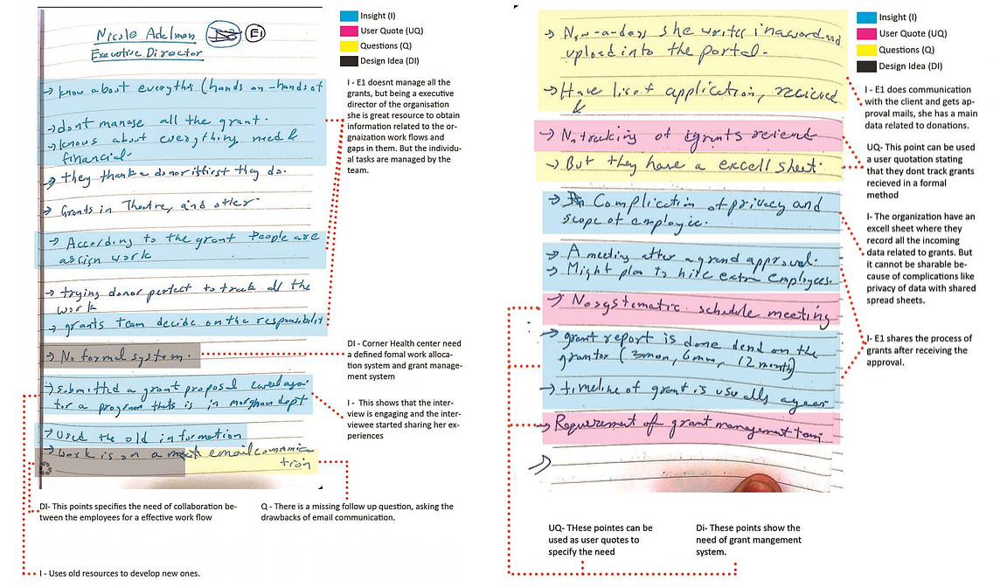
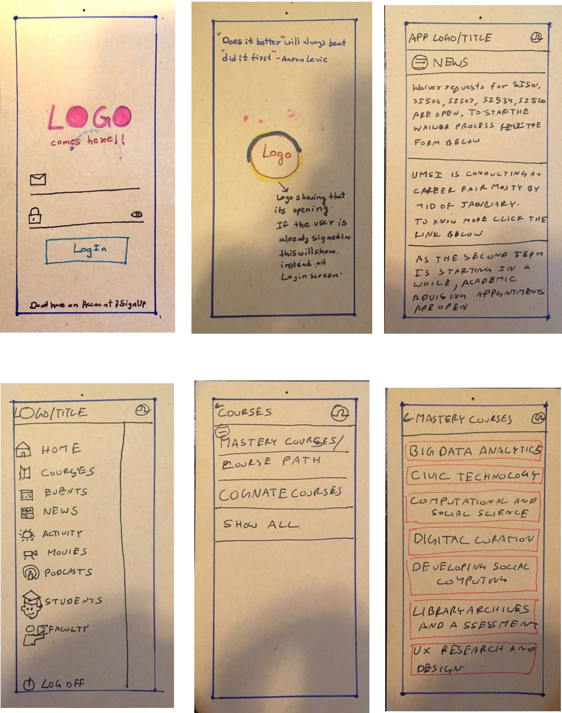

Problem
The Corner Health Center is a non-profit organization location in Ypsilanti, Michigan which provides free health services to young people aged 12-25. It is Michigan’s first, largest, and most comprehensive teen health center. At the Corner Health, the young people can access a wide range of medical, mental and other supportive programs.
Skills Developed
Contextual Inquiry, Affinity Wall, Research mapping, User Interviewing, Interview Interpretation.
Problem
The client was having a problem in soliciting new grants and donations into their existing database called DonorPerfect and include spending statuses of the grants and donations.
Team
June Park, Kesava Karthik Kota, Nalin Bhatia, Sangho Eum.
Design Process

Research
After thorough research, for interviewing the interviewees we have developed an Interview Protocol, a template that lays out the protocol from the introduction to the conclusion that we would use in order to keep the format of every interview consistent. This document consists of a question set that was categorized into Management and Coordination, Grant Management, and Donor Communication and Outreach. Each category represents the context of which we wanted to gain information in, and depending on the role of each interviewee, questions from part or all of the three categories were asked. This was done because our goal was to receive a concrete description of what each interviewee witnessed while working.
Interview Protocol
To understand the client's problem our team started with background research, focusing on multiple areas that include general background about the client and their problem, target population, sector research, competitor analysis and other literature reviews.
Interviews
Conducting contextual interviews gave a good cross-section of the whole organization with a small number of participants. To achieve this goal, we held a total of five contextual interviews, where interviewees roles included directors and staff members. Hierarchy of employees within the Corner Health Center is shown in the figure below.
Interpretation
After each of the interviews, our team meets to interpret the whole interview. During the interpretation session, the two interviewers will explain the interviews session in details. Also, the images and recordings taken were used to interpret the information. Keynotes were identified, if any more information needs to be discussed in the next interview.
Key quotations of the inteviewees
Some of the key points quoted by the employees are
Affinity Wall
After interpreting all the interviews, we have about 350 notes. To analyze the information we developed an affinity wall, with clusters of data. Every bunch of notes forms a meta-cluster to categorize the data at different levels. The wall visualized the gaps between the work flow and the organization short comes.
Key Findings
After analyzing the affinity notes from the interviews and affinity wall, we have found multiple problems in the organization workflow. The issues are categorized as:
- Collaboration and Communication
- Training
- Grant Management System
- Use of Technology
- Accessibility
- Mismatch of Information
- Donor Communication
Though the clients described the problem was to integrate donor perfect into their grant management to manage the financial data and donors records, our findings indeed demonstrated multiple other issues that need to be resolved or tackled to develop efficient grant management and workflow in the organization.
Recommendation 1- Collaboration Software
Collaboration software facilitates sharing and collaboration of files, tasks, and other relevant data among several individuals, systems and organizations. They are primarily developed to help organizations enhance their productivity and manage tasks effectively. Their features include communication, video conferencing, file sharing, coordination and so on. In today’s market, with collaboration software available, choosing the right one can be an overwhelming task. Therefore, the first step is to determine several factors like the organization’s work, structure, goals, needs, financial capacity, etc.
The criteria considered were not only to ensure successful communication and collaboration but also features that a non-profit organization can benefit from which other tools might not offer. Therefore, we considered the following criteria.
- Real-time collaboration
- Ease of Use
- Manage tasks and events
- Controlled access
- Cost-effectiveness
Collaboration Tool:Communifier
Communifire is an intranet software that enables collaboration and communication by connecting users, documents, and projects, and keeping everyone on the same page. It keeps everyone engaged by building an internal online community. The event manager feature facilitates scheduling meetings, conferences, events and more. It also bolsters the communicative strength of an organization by hosting functions such as creating, articles, videos, news content, knowledge base, press releases, etc.
